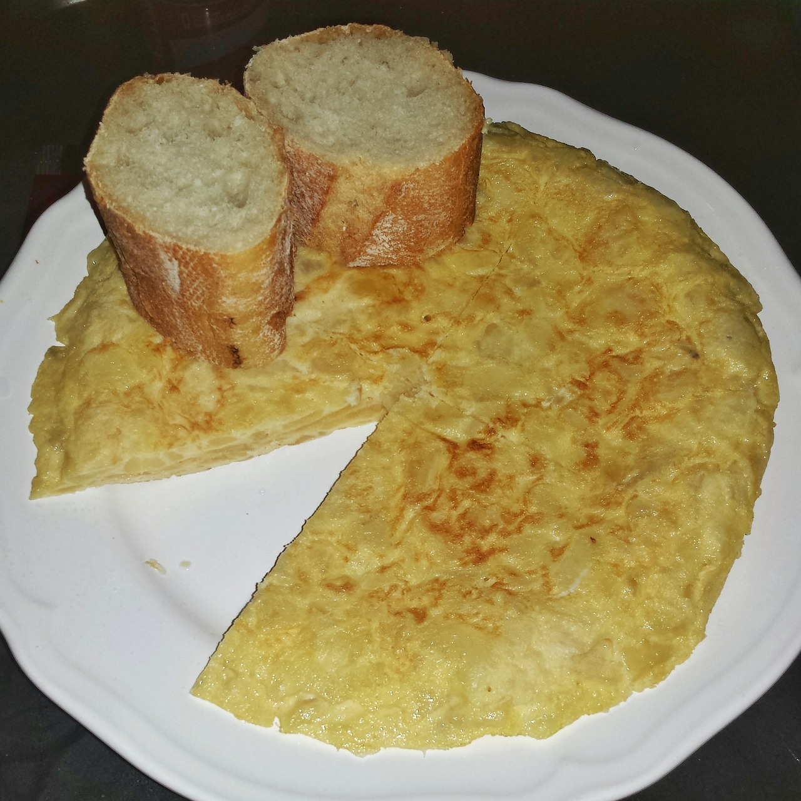

Tortilla de patata
Típica y sencilla

Ingredientes:
| Ingredientes | Cantidad |
|---|
| Huevos | 6 huevos |
| Aceite de oliva | 2 vasos |
| Perejil | 1 hoja |
| Patatas | 600 g |
| Pimiento verde | 1 unidad |
| Sal | 1 g |
Pasos:
- Cortar el pimiento y las patatas (peladas)y echarlas en la sartén
- Mantenerla a fuego suave
- Retirar y escurrir la mezla
- Batir los huevos y echarlos a la mezcla
- Echar la mezla de nuevo a la sartén y esperar a que cuaje
- Una vez cuajado ese lado, darle la vuelta para que cuaje el otro
- Retirar la tortilal cuajada de la sartén y dejar enfriar
Inicio Croquetas Lasaña
 Esta obra está bajo una Licencia Creative Commons Atribución-NoComercial 4.0 Internacional.
Esta obra está bajo una Licencia Creative Commons Atribución-NoComercial 4.0 Internacional.